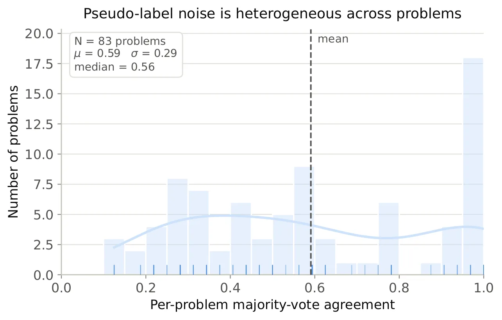
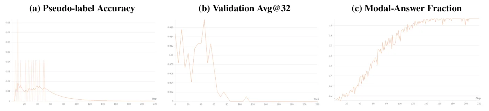
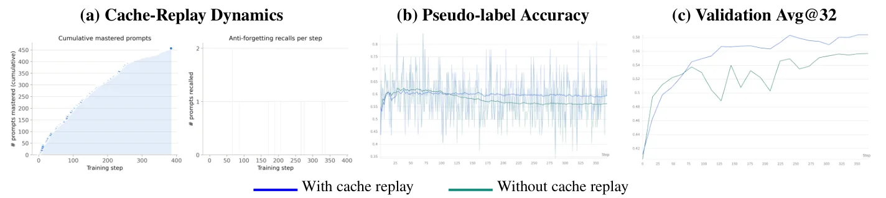
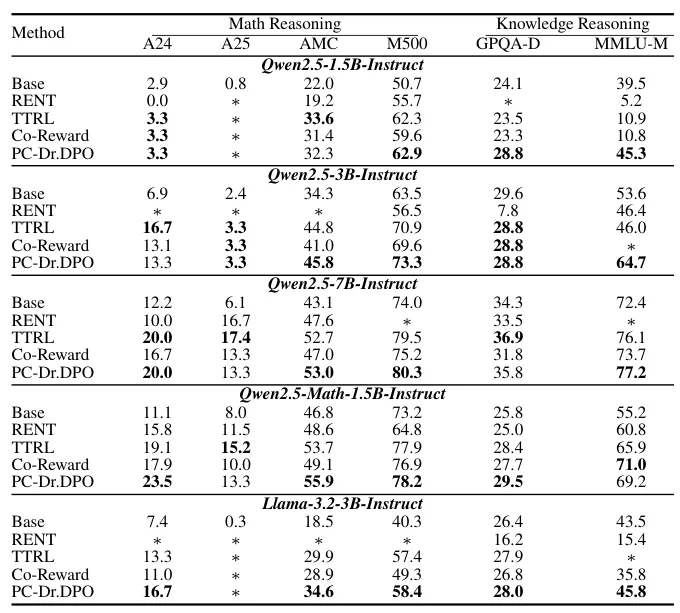

O Problema da Adaptação sem Rótulos
Os grandes modelos de linguagem (LLMs) alcançaram desempenho notável em raciocínio e planejamento, mas seu treinamento pós-alinhamento é predominantemente offline. Isso significa que os parâmetros do modelo são fixados antes da implantação e não se adaptam a mudanças na distribuição de entrada no momento do teste. Essa limitação é crítica em domínios novos ou especializados, onde dados de adaptação rotulados e verificadores externos confiáveis podem estar indisponíveis.
Para contornar essa limitação, surgiu o Aprendizado por Reforço em Teste (TTRL, do inglês Test-Time Reinforcement Learning). O TTRL adapta um modelo pré-treinado em prompts de domínio-alvo não rotulados usando recompensas geradas pelo próprio modelo. Essas recompensas são construídas a partir de sinais de certeza, como entropia de previsão, ou sinais baseados em ensemble, como consistência de votação majoritária e acordo entre visões alternativas de uma entrada.
Embora esses métodos possam melhorar o raciocínio sem rótulos de verdade (ground-truth), seu sucesso depende criticamente da confiabilidade da auto-supervisão gerada. Trabalhos anteriores relatam melhorias mesmo sob recompensas imperfeitas ou espúrias, enquanto outros destacam riscos como memorização, contaminação de dados e padrões de colapso. A falta de um framework formal que caracterize quando os rótulos pseudo-gerados são confiáveis limita o design principado de algoritmos de adaptação em tempo de teste.
A Votação Majoritária e Seus Erros Inerentes
Neste trabalho, os autores analisam a supervisão por votação majoritária para o TTRL com otimização direta de preferência online (online DPO). Eles identificam duas fontes distintas de erro na votação majoritária: o viés da maioria populacional e a variação de rollouts finitos.
O viés da maioria populacional ocorre quando a resposta modal (mais frequente) da política de comportamento é incorreta. Esse erro é, em geral, não identificável sem supervisão externa, pois não há um rótulo verdadeiro para comparar. Portanto, não pode ser corrigido diretamente durante a adaptação não supervisionada.
A variação de rollouts finitos ocorre quando a maioria observada em uma amostra limitada de gerações difere da verdadeira moda populacional. Isso reflete a sensibilidade à amostragem e varia entre prompts dependendo de quão decisivamente a política de comportamento favorece sua resposta modal sobre as concorrentes. Essa heterogeneidade ao nível do prompt é crucial para a construção de preferências.

Heterogeneidade do Ruído e a Falha dos Métodos Existentes
Como mostrado na Figura 1, a fração de rollouts que produzem a resposta final mais frequente varia substancialmente entre problemas. Para alguns prompts, os grupos de rollout são quase unânimes. Para outros, as distribuições de resposta são altamente fragmentadas. Para estes últimos, o rótulo pseudo-selecionado é mais sensível à amostra de rollout particular e pode mudar sob remostragem.
Métodos existentes de otimização de preferência robusta a ruídos geralmente empregam um modelo de ruído compartilhado em nível de dataset ou um objetivo robusto globalmente normalizado sobre pares de preferência. Consequentemente, eles não adaptam explicitamente a força da robustez à confiabilidade dependente do prompt induzida pela amostragem de rollouts finitos durante a adaptação em tempo de teste.
Essa desconexão leva a problemas. Se o modelo trata todos os prompts com a mesma confiança, ele pode atualizar seus parâmetros agressivamente com base em rótulos pseudo-ruídos de prompts instáveis, levando a um colapso do desempenho. A Figura 4 ilustra esse colapso auto-reforçador, onde a precisão dos rótulos pseudo cai, mas a confiança do modelo aumenta, resultando em uma queda eventual da precisão de validação para zero.

PC-Dr.DPO: Robustez Condicional ao Prompt
Para abordar essa lacuna, os autores propõem o PC-Dr.DPO (Prompt-Conditional Distributionally Robust DPO). O PC-Dr.DPO realiza reweighting robusto separadamente dentro do grupo de rollout de cada prompt. Ele adapta uma temperatura de robustidade específica ao prompt usando a confiabilidade observada do voto.
A ideia central é tornar as atualizações provenientes de prompts sensíveis à amostragem mais conservadoras. Se a votação majoritária em um prompt é fragmentada (baixa confiabilidade observada), o método reduz o peso das preferências derivadas desse prompt, protegendo o modelo de aprender ruídos de amostragem. Se a votação é unânime (alta confiabilidade), o modelo pode aprender mais agressivamente.
Mitigando o Esquecimento via Cache
Além da reweighting robusta, os autores introduzem um mecanismo baseado em cache para reduzir o esquecimento não supervisionado durante a adaptação online. Em cenários de TTRL, o modelo pode 'esquecer' soluções que já dominava ao se adaptar a novos dados ruidosos.
O mecanismo de cache armazena prompts cujas soluções foram identificadas como corretas ou estáveis. Durante a adaptação, o modelo revisita esses prompts armazenados, reforçando o conhecimento adquirido e evitando a degradação de habilidades previamente estabelecidas. A Figura 5 demonstra que o replay de cache melhora a precisão dos rótulos e evita o esquecimento, mantendo a precisão estável ao longo do tempo de adaptação.

Resultados Empíricos
Os autores avaliaram o PC-Dr.DPO em seis benchmarks de raciocínio matemático e intensivo em conhecimento: AIME24, AIME25, AMC23, MATH500, GPQA-Diamond e MMLU-Pro (subconjunto de matemática). Os testes foram realizados em cinco backbones de modelos: Qwen2.5-1.5B, Qwen2.5-3B, Qwen2.5-7B, Qwen2.5-Math-1.5B e Llama-3.2-3B.
O PC-Dr.DPO correspondeu ou superou a baseline mais forte de TTRL em 24 dos 30 configurações de modelo-benchmark. As baselines comparadas foram RENT (baseada em certeza), TTRL e Co-Reward (baseadas em ensemble). Em muitos casos, os métodos baselines sofreram colapso (indicado por * na Tabela 1), enquanto o PC-Dr.DPO manteve a estabilidade.
Por exemplo, no benchmark AMC com Qwen2.5-Math-1.5B-Instruct, o PC-Dr.DPO alcançou 55.9% de precisão, superando o TTRL (53.7%) e o Co-Reward (49.1%). No MMLU-Pro, o PC-Dr.DPO alcançou 69.2%, superando significativamente o TTRL (65.9%) e o Co-Reward (71.0% foi o melhor, mas o PC-Dr.DPO foi competitivo). Em configurações onde outros métodos colapsaram, como no AIME25 com Qwen2.5-1.5B, o PC-Dr.DPO ainda produziu resultados utilizáveis.

Análise de Ablação e Dinâmica de Adaptação
Os autores realizaram uma análise de ablação para entender a contribuição de cada componente do PC-Dr.DPO. Eles demonstraram que a reweighting condicional ao prompt é essencial para a estabilidade. Sem ela, o modelo tende a overfit em prompts ruidosos, levando a uma queda de desempenho.
A Figura 2 mostra a dinâmica de adaptação do Qwen2.5-Math-1.5B-Instruct no benchmark AMC. O gráfico esquerdo mostra a fração de problemas no conjunto inicial de maioria-voto-solvável que são recuperados pela política adaptada. O modelo recupera progressivamente a maioria das soluções inicialmente disponíveis. O gráfico do meio mostra a diferença entre o número de problemas resolvidos pela política atual e a referência inicial, indicando recuperação total. O gráfico à direita decompondo os problemas resolvidos em recuperados e novos descobertos.
Isso sugere que o PC-Dr.DPO não apenas melhora o desempenho, mas também preserva o conhecimento existente, recuperando soluções que já estavam acessíveis via votação majoritária, enquanto ocasionalmente descobre novas soluções fora do conjunto inicial.
Limitações e Considerações Finais
Apesar dos resultados promissores, o paper tem limitações. A análise foca especificamente na votação majoritária com online DPO. Outros métodos de auto-supervisão, como aqueles baseados em entropia ou verificação formal, não foram analisados neste framework. Além disso, o viés da maioria populacional permanece não identificável; se a resposta modal for sistematicamente incorreta, o PC-Dr.DPO não pode corrigir esse viés fundamental sem supervisão externa.
Os experimentos foram realizados em um único nó com oito GPUs NVIDIA H100, o que pode limitar a escalabilidade para modelos muito maiores ou conjuntos de dados massivos. A adaptação foi feita com um orçamento fixo de adaptação para cada benchmark, e a precisão final foi relatada, sem seleção do melhor checkpoint intermediário. Isso evita favorecer métodos que melhoram inicialmente mas colapsam depois, refletindo um cenário prático onde o início da degradação não é conhecido antecipadamente.
Em resumo, o PC-Dr.DPO oferece uma abordagem robusta para adaptar LLMs em tempo de teste usando votação majoritária, mitigando os efeitos da variação de rollouts finitos. Ao condicionar a robustez à confiabilidade observada e usar cache para evitar esquecimento, o método demonstra vantagem consistente sobre baselines existentes em diversos benchmarks e backbones.
O que fica
- A votação majoritária em TTRL sofre de ruído heterogêneo: alguns prompts têm rótulos confiáveis, outros são sensíveis à amostragem, levando a colapsos se tratados uniformemente.
- O PC-Dr.DPO mitiga isso condicionando a robustez da atualização ao nível de confiança observado por prompt, tornando atualizações de prompts instáveis mais conservadoras.
- Um mecanismo de cache replay é introduzido para evitar o esquecimento não supervisionado, mantendo a precisão estável durante a adaptação online.
- O método corresponde ou supera baselines fortes em 24 de 30 configurações, especialmente em cenários onde outros métodos colapsam devido a rótulos pseudo-ruídos.
Paper original: On the Reliability of Majority-Vote Pseudo-Labels in Test-Time Reinforcement Learning
Comentários
Nenhum comentário ainda. Seja o primeiro.